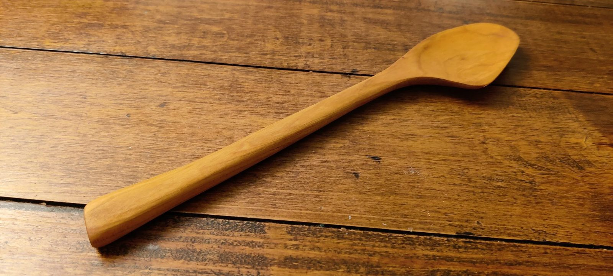
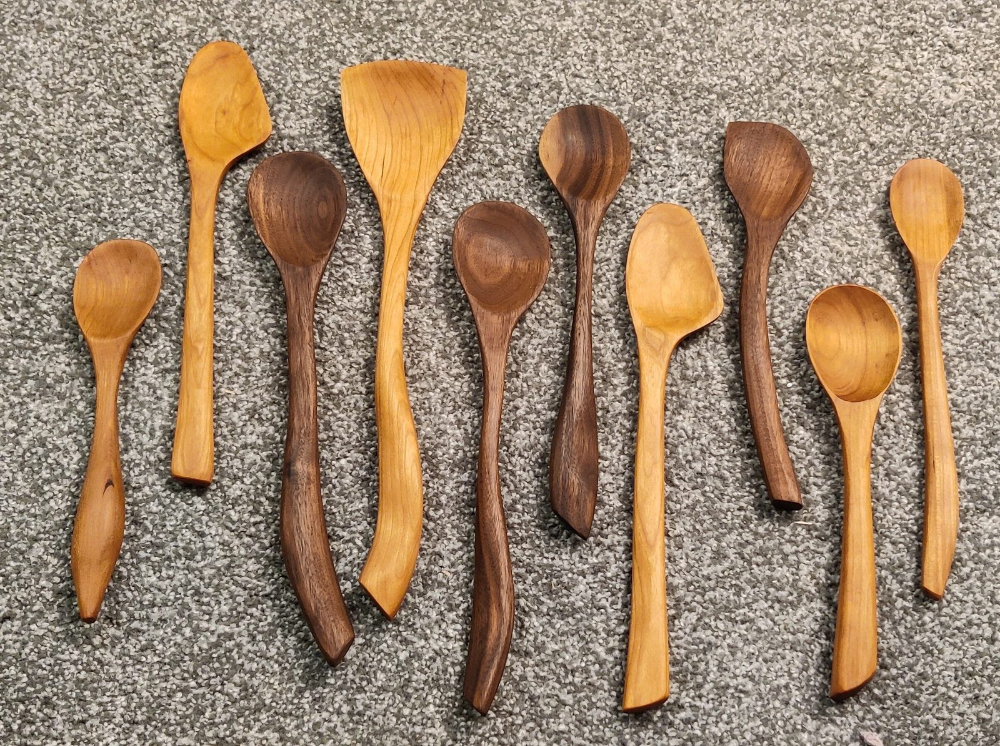
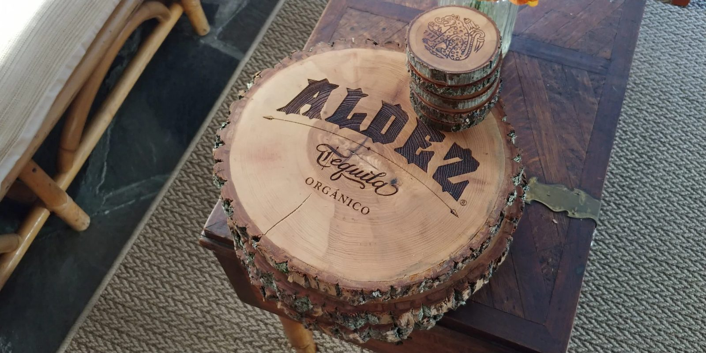
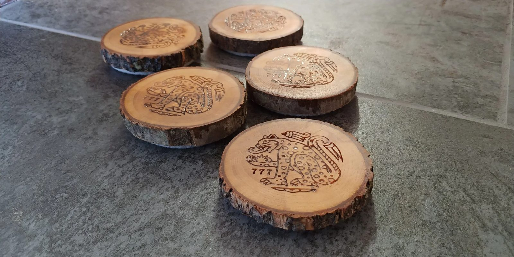

Kitchen
The things you reach for every day are worth making well. Everything here is shaped to sit right in the hand and finished food-safe, so it can go from the drawer to a boiling pot and back for years.
Hand-carved spoons
Walnut, cherry or maple · mineral oil & beeswaxEach one is carved and shaped by hand from domestic hardwood, then bathed in mineral oil and sealed with beeswax so it shrugs off hot water and tomato sauce. Wash them in hot soapy water; give them a fresh coat of oil and wax once a year and they'll outlast the pots.




Serving boards & coasters
Live edge · engraved to orderLive-edge rounds cut from local logs, sanded flat and sealed, with the bark left on the rim. They can be engraved with anything you like — a monogram, a family name, a logo for a bar or a brand.

